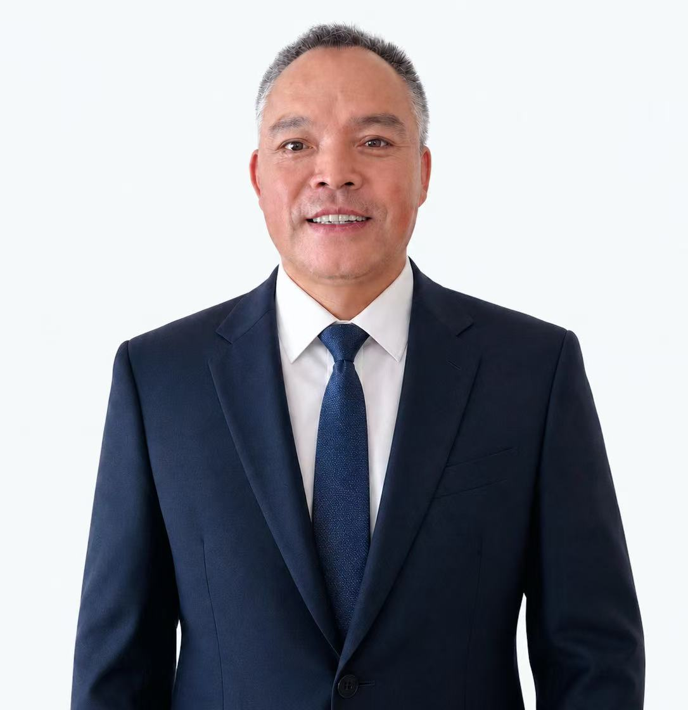

团队管理
孟庆冬
公司总经理

在创立济宁和联商贸有限公司之前，孟庆冬先生曾于洗化及快消品行业深耕多年，长期从事市场销售、渠道开发及终端运营等相关工作，积累了丰富的行业经验与市场资源，对区域快消品渠道运营拥有深刻理解。
多年的一线市场经历，使其深入了解终端零售需求与区域消费市场变化，也逐渐形成了“以渠道为基础、以服务为核心、以长期合作为方向”的经营理念。
2011年，孟庆冬先生正式创立济宁和联商贸有限公司。从最初单一品牌代理、零市场基础起步，带领团队逐步建立覆盖济宁及鲁西南地区的终端销售与物流配送体系，持续推动企业向规范化、专业化方向发展。
在企业发展过程中，孟庆冬先生始终坚持稳健经营与长期主义理念，先后推动公司与多家国内知名品牌建立长期合作关系，并不断完善仓储、物流、电商及渠道运营体系。
随着市场环境变化，公司于2017年开启线上电商业务，逐步实现传统渠道与互联网销售融合发展，进一步拓宽企业市场覆盖范围。
未来，孟庆冬先生将继续带领和联商贸深耕快消品行业，坚持诚信经营、合作共赢的发展理念，不断提升服务能力与渠道运营水平，持续推动企业高质量发展。